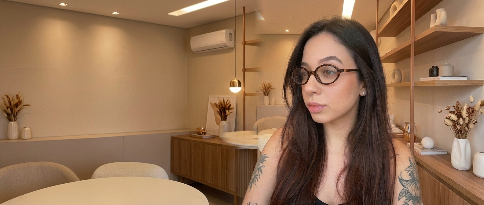

{{ it.title }}
{{ it.meta }}
{{ it.desc }}

Atendimento psicológico para mulheres. Um lugar de escuta dedicado a acolher sua história, suas dúvidas e suas transições, dando clareza para você assumir suas próprias escolhas.
Atendimento psicológico para mulheres. Um lugar de escuta dedicado a acolher sua história, suas dúvidas e suas transições, dando clareza para você assumir suas próprias escolhas.
Quero entender como funciona →{{ q.text }}
Freud dizia que tudo aquilo que a gente não consegue falar acaba encontrando outro caminho para sair, e quase sempre de uma forma mais difícil.
A vida adulta cobra muito. Cobra conta, cobra presença, cobra clareza sobre quem você é e o que você quer. E no meio de tudo isso, tem coisas que ficam presas: nos relacionamentos que se repetem, nas escolhas que travam, no cansaço que não tem nome.
Esse desconforto, mesmo que ainda difícil de explicar, já é sinal suficiente de que há algo na sua trajetória pedindo para ser escutado.
Psicóloga e psicanalista. Escolhi a clínica porque acredito na potência transformadora que existe quando uma mulher decide dar nome às suas próprias vivências.
O trabalho que construo apoia-se em um compromisso central: uma escuta humana, ética e verdadeiramente presente.
Não acredito em teorias que se distanciam das pessoas ou em análises frias. O espaço que ofereço é construído a duas mãos, pautado pelo estudo rigoroso de cada caso, pelo afeto e pelo reconhecimento de que falar sobre si exige coragem. Aqui, sua história é acolhida em toda a sua singularidade.
Para mulheres que vivem momentos de transição, lidam com a sobrecarga de dar conta de tudo e buscam um lugar de escuta para entender suas próprias escolhas, sem precisar ter todas as respostas prontas.
Um processo contínuo de autoconhecimento e escuta de si. A psicanálise não busca se encaixar em fórmulas ou regras prontas; ela abre espaço para você olhar para o que sente com mais liberdade, encontrando novos caminhos para a sua história no seu próprio tempo.
Encontros semanais, individuais e online, com duração de 50 minutos. É o seu momento na semana: sem roteiros rígidos ou temas obrigatórios. Você traz o que apareceu no dia, o que ficou travado ou o que sentir vontade de conversar.
Nossa primeira sessão é um ponto de partida para nos conhecermos. Você não precisa chegar com tudo organizado. Aos poucos, juntas, vamos entendendo o que faz sentido olhar e acolher primeiro.
Cultura pop também fala sobre quem somos.
Os atendimentos presenciais acontecem na Diálogos, um ambiente estruturado para garantir o acolhimento e a privacidade que o seu processo exige. A clínica oferece um espaço reservado e tranquilo, preparado em cada detalhe para que você possa desacelerar e olhar para a sua história com calma.
Se você sente que é hora de olhar para a sua história com mais cuidado e atenção, saiba que este é um espaço seguro.
Quero agendar minha primeira conversa →